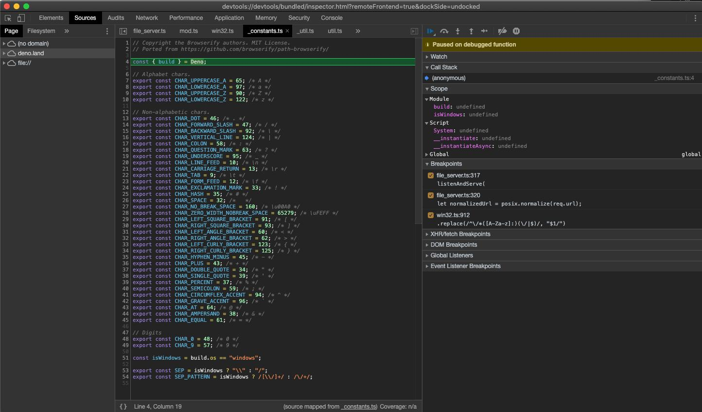
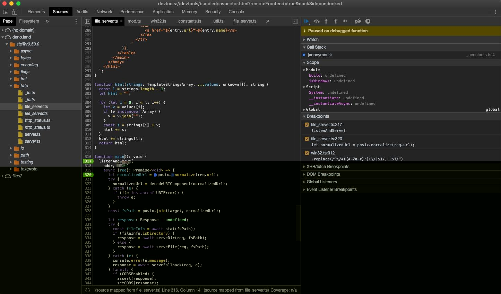
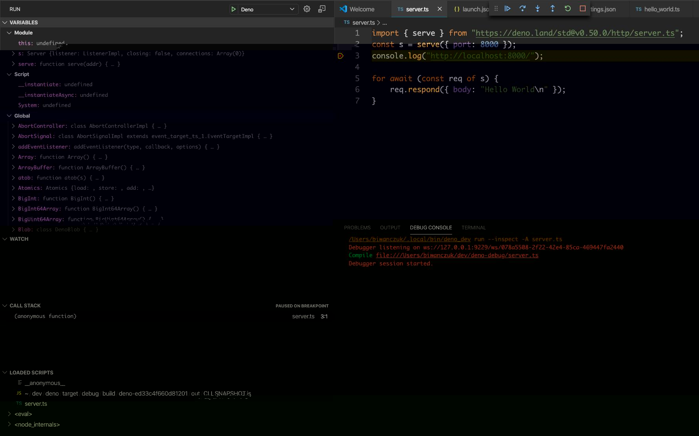

调试器 (debugger)
Deno 支持 V8 Inspector Protocol.
使用 Chrome Devtools 或其他支持该协议的客户端（比如 VSCode）能够调试 Deno 程序。
要启用调试功能，用 --inspect 或 --inspect-brk 选项运行 Deno。
--inspect 选项允许在任何时间点连接调试器，而 --inspect-brk 选项会等待调试器连接，在第一行代码处暂停执行。
Chrome Devtools§
让我们用 Chrome 开发者工具来调试一个程序，我们将使用来自 std 的 file_server.ts，这是一个静态文件服务。
使用 --inspect-brk 选项，在第一行代码处暂停执行。
$ deno run --inspect-brk --allow-read --allow-net https://deno.land/std@v0.50.0/http/file_server.ts
Debugger listening on ws://127.0.0.1:9229/ws/1e82c406-85a9-44ab-86b6-7341583480b1
Download https://deno.land/std@v0.50.0/http/file_server.ts
Compile https://deno.land/std@v0.50.0/http/file_server.ts
...
打开 chrome://inspect，点击 target 旁边的 Inspect。

开发者工具加载所有模块时可能会等待几秒。

您可能注意到开发者工具暂停执行的地方不是 file_server.ts，而是 _constants.ts 的第一行。这是符合预期的行为，ES 模块在 V8 中执行的顺序如此。_constants.ts 是 file_server.ts 最深、最先的依赖，因此它会最先执行。
在这时，所有源码在开发者工具中都可用。打开 file_server.ts，加一处断点，然后打开 "Sources" 面板，展开树：

仔细观察，您会发现每个文件都有重复的条目，一个是正常字体，另一个是斜体。前者是编译后的源文件（所以 .ts 文件会生成 JavaScript 源代码），后者是该文件的源映射 (source map)。
下一步，在 listenAndServe 方法处加一个断点。

添加断点后，开发者工具会自动打开源映射文件，让我们能在包含类型的实际源码中步进。
现在我们已经设置了断点，在触发断点时，我们可以检查传入的请求，也可以继续执行脚本。点击恢复脚本执行的按钮即可，您可能需要点两次。
当脚本继续运行时，让我们发送一个请求，看看开发者工具中发生了什么。
$ curl http://0.0.0.0:4500/

在这时，我们可以检查请求的内容，逐步调试代码。
VSCode§
Deno 可以在 VSCode 中调试。
插件的官方支持正在开发中 https://github.com/denoland/vscode_deno/issues/12
我们也可以通过手动提供 launch.json 配置，来连接调试器：
{
"version": "0.2.0",
"configurations": [
{
"name": "Deno",
"type": "node",
"request": "launch",
"cwd": "${workspaceFolder}",
"runtimeExecutable": "deno",
"runtimeArgs": ["run", "--inspect-brk", "-A", "${file}"],
"port": 9229
}
]
}
注意：这将使用您打开的文件作为入口点；如果需要固定的入口点，请用脚本名称替换 ${file}。
让我们尝试一下本地源文件，创建 server.ts：
import { serve } from "https://deno.land/std@v0.50.0/http/server.ts";
const server = serve({ port: 8000 });
console.log("http://localhost:8000/");
for await (const req of server) {
req.respond({ body: "Hello World\n" });
}
然后我们可以设置断点，运行已创建的配置：

JetBrains IDE§
您可以使用 JetBrains IDE 来调试 Deno，右击您想要调试的文件，选择 Debug 'Deno: <file name>'。这会创建一个没有权限设置的 运行/调试 配置，您可能需要更改 Arguments 字段来提供所需权限。
其他§
实现 Devtools 协议的任何客户端都能连接 Deno 进程。
限制§
开发者工具的支持仍不成熟，有一些功能是缺失的，或是有 bug 的：
- 开发者工具控制台中的自动补全会让 Deno 进程退出。
- 性能分析 (profiling) 和内存转储 (memory dump) 可能不正确。